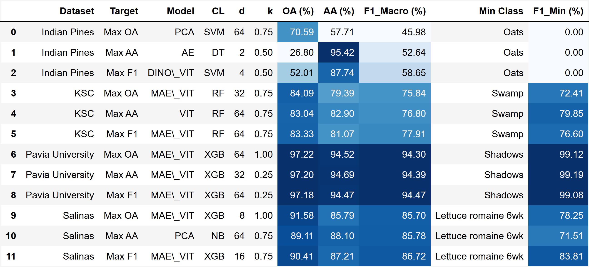
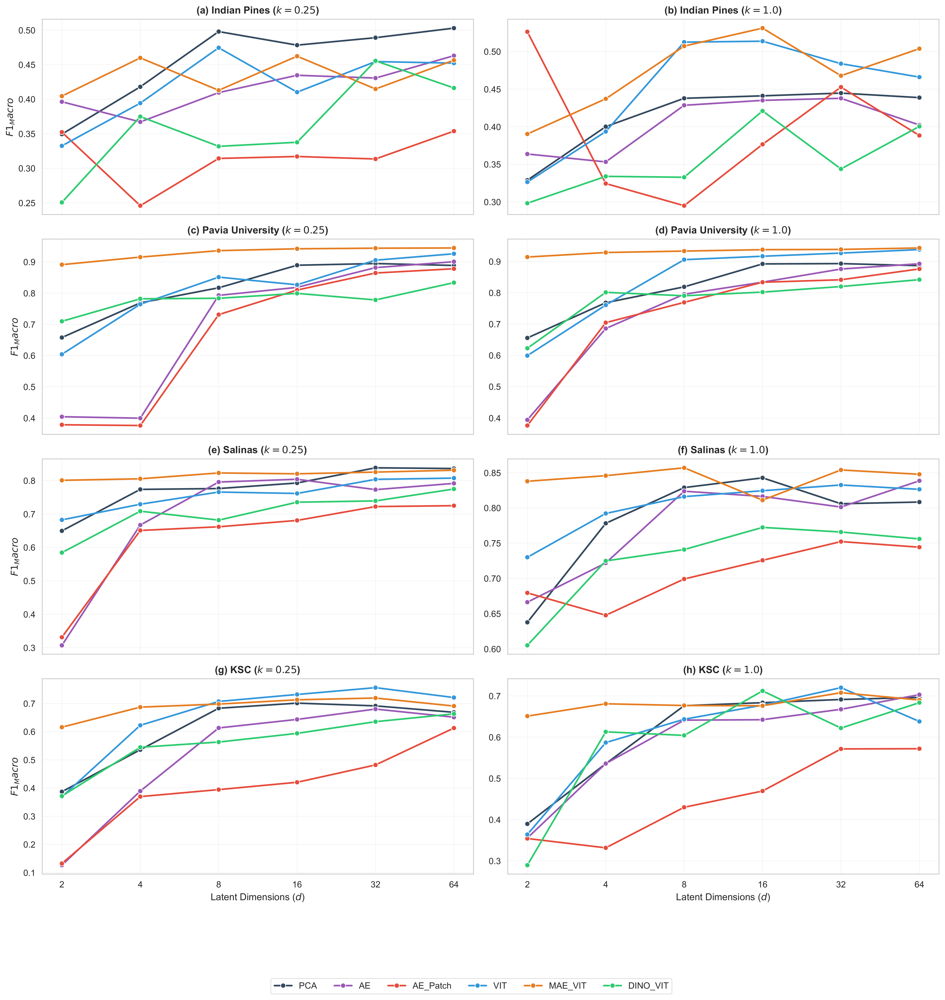
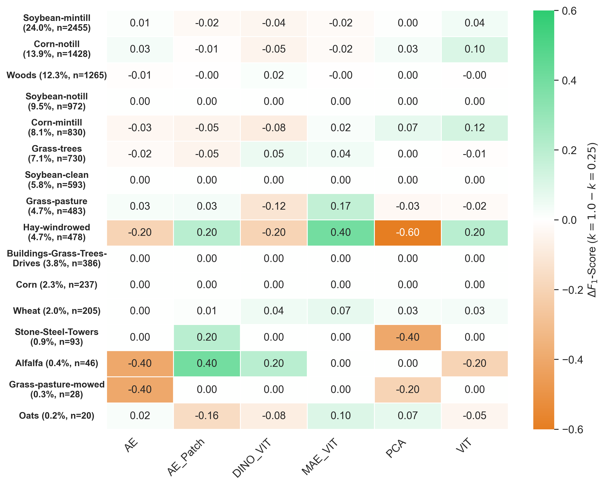

Assessing the influence of using a reduced number of samples for creating different representation models for hyperspectral image classification
Overview
This page presents the visual results of our methodology to evaluate the impact of training sample size (k) on various Representation Learning (RL) models for Hyperspectral Image (HSI) classification.
We rigorously compared pixel-wise baselines (PCA, AE) against advanced spatial-spectral models (including ViT, MAE-ViT, and DINO-ViT) under extreme data scarcity constraints.
Phase 1: Metric Divergence Table
Optimizing exclusively for Overall Accuracy (OA) often leads to catastrophic failure in minority classes. The following table empirically justifies the selection of F1-Macro as the primary metric for our evaluation.

Phase 3: Latent Convergence Analysis
We analyzed how the models converge and behave when increasing their latent dimension (d) capacity.

Phase 4: Class-wise Delta Performance
How does extreme data scarcity (k=0.25 vs k=1.0) impact each specific class? The following heatmap illustrates the Delta (Δ) F1-Score per class for the Indian Pines dataset.

Phase 4: Granular Heatmap (Pavia University)
Absolute F1-Score representation for Pavia University across all models and configurations.